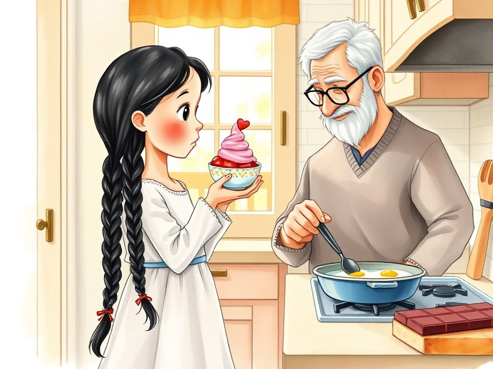

Grade 2 · Science · 2-PS1-4
The ice cream that froze again
A story about changes that can be undone and changes that cannot.
Science words you will learn
Tap a green word to see what it means.
The story
It was very hot in Chicago. Lucía took a strawberry ice cream out of the freezer, but she got busy playing. When she came back, the ice cream was a little pink puddle.
"It !" she said sadly. "That is because it got warm," Grandpa explained. "When we something, we give it heat. Heat can turn a solid into a liquid."
"What do I do now?" Lucía asked. "Put the puddle back in the freezer. It will down there."
The next day, the ice cream was hard again. It had . It did not have the same shape, but it was a solid again. "This is a ," said Grandpa. "It is a change that can be undone."
Then Grandpa heated a pan and cracked an egg. The egg white turned from clear to white, and the egg became firm.
"If we cool it, will it be raw again?" Lucía asked. "No," Grandpa answered. "No matter how much you cool it, a fried egg can never become a raw egg again. It is an : it cannot be undone."
Lucía thought about other things in the kitchen. Chocolate melts with heat and gets hard when it cools: that is reversible. Toast never turns back into soft bread: that is irreversible.
That night, Lucía made a list in her notebook with two columns: "Can be undone" and "Cannot be undone." She was already a little scientist!
Glossary
- heat
- To give something heat so its temperature goes up.
- cool
- To take heat away from something so its temperature goes down.
- melt
- To change from a solid to a liquid because of heat. Ice melts and becomes water.
- freeze
- To change from a liquid to a solid because of cold. Water freezes and becomes ice.
- reversible change
- A change that can be undone, like ice that melts and then freezes again.
- irreversible change
- A change that cannot be undone, like a fried egg or a piece of toast.
Questions
Choose the correct answer. If you make a mistake, the story shows you where the answer is.
-
Question A. What happened to the ice cream when it got warm?
Heat turned the ice cream, which was a solid, into a liquid: it melted.
-
Question B. Why is the ice cream a reversible change?
When it cooled, the ice cream became a solid again. The change could be undone.
-
Question C. What happens if you cool a fried egg?
Frying an egg is an irreversible change: even if you cool it, it can never be raw again.
-
Question D. What kind of change is toasting bread?
Toast never turns back into soft bread, so it is an irreversible change.